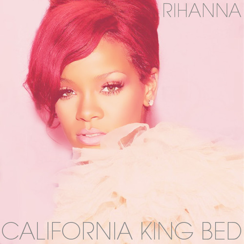
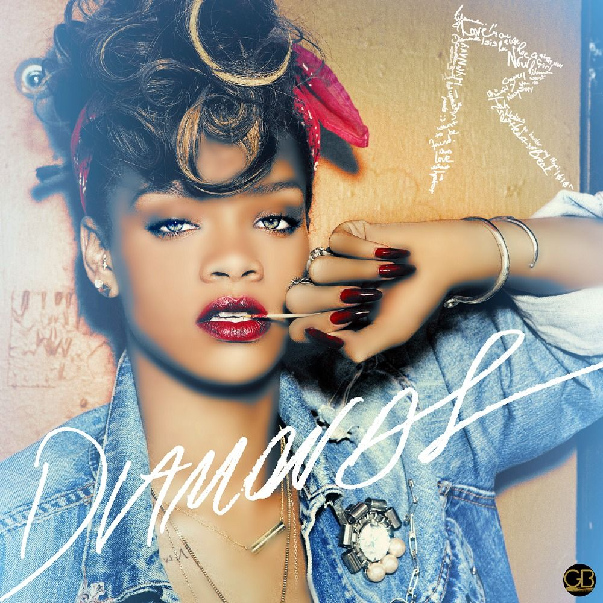

Rihanna
Robyn Rihanna Fenty (/ri'æn?/;[1] born February 20, 1988), known mononymously as Rihanna, is a Barbadian singer and songwriter. Born in Saint Michael and raised in Bridgetown, she first entered the music industry by recording demo tapes under the direction of record producer Evan Rogers in 2003. She ultimately signed a recording contract with Def Jam Recordings after auditioning for its then-president, hip hop producer and rapper Jay Z. In 2005, Rihanna rose to fame with the release of her debut studio album Music of the Sun and its follow-up A Girl like Me (2006), which charted on the top 10 of the U.S. Billboard 200 and respectively produced the hit singles "Pon de Replay" and "SOS".
Umbrella
[2]
"Umbrella" is a song by Barbadian singer Rihanna from her third studio album Good Girl Gone Bad (2007). It features American rapper Jay Z, who co-wrote the song with its producers Tricky Stewart and Kuk Harrell, with additional writing from The-Dream. The song was originally written with Britney Spears in mind, but her label rejected it. "Umbrella" is a pop and R&B song referring to a romantic and platonic relationship and the strength of that relationship.
Entertainment Weekly ranked the song number one on the 10 Best Singles of 2007, while Rolling Stone and Time listed the song at number three on the 100 Best Songs of 2007. The song has earned Rihanna several awards and nominations. In 2007, the song won two awards at the MTV Video Music Awards, when it was nominated for four. At the 2008 Grammy Awards, "Umbrella" also earned Rihanna and Jay Z a Grammy Award for Best Rap/Sung Collaboration in addition to receiving nominations for Record of the Year and Song of the Year. The song is also listed on Rolling Stone's The 500 Greatest Songs of All Time at 412.
Lyrics
[Jay-Z]
Ahuh Ahuh (Yea Rihanna)
Ahuh Ahuh (Good girl gone bad)
Ahuh Ahuh (Take three... Action)
Ahuh Ahuh
No clouds in my stones
Let it rain, I hydroplane in the bank
Coming down with the Dow Jones
When the clouds come we gone, we Rocafella
We fly higher than weather
In G5's are better, You know me,
In anticipation, for precipitation. Stack chips for the rainy day
Jay, Rain Man is back with little Ms. Sunshine
Rihanna where you at?
[Rihanna]
You have my heart
And we'll never be worlds apart
May be in magazines
But you'll still be my star
Baby cause in the dark
You can't see shiny cars
And that's when you need me there
With you I'll always share
Because
[Chorus]
When the sun shines, we'll shine together
Told you I'll be here forever
Said I'll always be a friend
Took an oath I'ma stick it out till the end
Now that it's raining more than ever
Know that we'll still have each other
You can stand under my umbrella
You can stand under my umbrella
(Ella ella eh eh eh)
Under my umbrella
(Ella ella eh eh eh)
Under my umbrella
(Ella ella eh eh eh)
Under my umbrella
(Ella ella eh eh eh eh eh eh)
These fancy things, will never come in between
You're part of my entity, here for Infinity
When the war has took it's part
When the world has dealt it's cards
If the hand is hard, together we'll mend your heart
Because
[Chorus]
When the sun shines, we'll shine together
Told you I'll be here forever
Said I'll always be a friend
Took an oath I'ma stick it out till the end
Now that it's raining more than ever
Know that we'll still have each other
You can stand under my umbrella
You can stand under my umbrella
(Ella ella eh eh eh)
Under my umbrella
(Ella ella eh eh eh)
Under my umbrella
(Ella ella eh eh eh)
Under my umbrella
(Ella ella eh eh eh eh eh eh)
You can run into my arms
It's OK don't be alarmed
Come here to me
There's no distance in between our love
So go on and let the rain pour
I'll be all you need and more
Because
[Chorus]
When the sun shines, we'll shine together
Told you I'll be here forever
Said I'll always be a friend
Took an oath I'ma stick it out till the end
Now that it's raining more than ever
Know that we'll still have each other
You can stand under my umbrella
You can stand under my umbrella
(Ella ella eh eh eh)
Under my umbrella
(Ella ella eh eh eh)
Under my umbrella
(Ella ella eh eh eh)
Under my umbrella
(Ella ella eh eh eh eh eh eh)
It's raining
Ooh baby it's raining
Baby come here to me
Come here to me
It's raining
Oh baby it's raining
California king bed
[3]
"California King Bed" is a song by Barbadian singer Rihanna from her fifth studio album, Loud (2010). The song was written and produced by Andrew Harr and Jermaine Jackson, of the American production duo The Runners, with Priscilla Renea and Alex Delicata. The song was chosen to be a single from the album through Twitter, and it was released as the album's sixth single on May 13, 2011, by Def Jam. "California King Bed" is a rock and R&B power ballad that lyrically discusses "the waking death of a relationship", where Rihanna asks her lover if he loves her with emotional weakness. Rihanna's vocals were commended by critics.
Commercially, the song topped the Polish and Slovakian charts, achieved the top-five in Australia, Austria, Czech Republic and Portugal, while also reaching the top-ten in Germany, New Zealand, Switzerland, the United Kingdom and others. In the United States, it reached the top-forty on the Billboard Hot 100 chart and topped the Dance Club Songs. The accompanying music video for the track was directed by Rihanna's longtime collaborator and director Anthony Mandler. Its tropical and romantic setting features an eighteen foot long bed designed specifically for the video. Rihanna promoted the track with live performances at the ACM Awards, along with Sugarland front woman Jennifer Nettles, as well as on American Idol, NBC's Today show, and on her Loud Tour (2011).
Click here for more information.
Lyrics
Chest to chest
Nose to nose
Palm to palm
We were always just that close
Wrist to wrist
Toe to toe
Lips that felt just like the inside of a rose
So how come when I reach out my finger
It feels like more than distance between us
In this california king bed
Were 10000 miles apart
I'll be california wishing on the stars
For youre heart on me
My californa king
Eye to eye
Cheek to cheek
Side by side
You were sleeping next to me
Arm in arm
Dusk to dawn
With the curtains drawn
And a little last night on these sheets
So how come when I reach out my finger
It feels like more than distance between us
In this california king bed
We're ten thousand miles apart
I bet california wishing on the stars
Warmed your heart for me
My california king
Just when I felt like giving up on us
You turned around and gave me one last touch
That made everything feel better
And even then my eyes got wetter
So confused wanna ask you if you love me
But I don't wanna feel so weak
Maybe ive been California dreaming
In this california king bed
We're ten thousand miles apart
I bet california wishing on these stars
Warmed your heart for me
My california king
My California King
In this california king bed
We're ten thousand miles apart
I bet California wishing on these stars
Warmed your heart for me
My California king
Diamonds
[4]
"Diamonds" is a song recorded by Barbadian singer Rihanna for her seventh studio album, Unapologetic (2012). It was written by Sia Furler together with its producers, Benny Blanco and StarGate. The song premiered on September 26, 2012, during the Elvis Duran and the Morning Show and was digitally released the following day as the lead single from Unapologetic. Def Jam Recordings serviced the single to contemporary hit radio in the United States on October 2. "Diamonds" is a mid-tempo electronic and pop ballad that features heavy synthesizers, orchestral sounds and electronic rhythms. The song's lyrics serve as a departure from the themes of unhealthy relationships that were on Rihanna's previous singles and contain a prominent concept of love.
"Diamonds" topped music charts in over twenty countries, including the United States, where it became Rihanna's twelfth number one single on the Billboard Hot 100 and tied her with Madonna and The Supremes for the fifth-most number one singles in the chart's history. "Diamonds" was certified quintuple platinum by the Recording Industry Association of America (RIAA) and sold over 3.5 million digital copies in the country. By May 2013, it had sold over 7.5 million copies worldwide and became one of the best-selling singles of all-time.
Click here for more information.
Lyrics
Shine bright like a diamond
Shine bright like a diamond
Find light in the beautiful sea
I choose to be happy
You and I, you and I
We’re like diamonds in the sky
You’re a shooting star I see
A vision of ecstasy
When you hold me, I’m alive
We’re like diamonds in the sky
I knew that we’d become one right away
Oh, right away
At first sight I left the energy of sun rays
I saw the life inside your eyes
So shine bright, tonight you and I
We’re beautiful like diamonds in the sky
Eye to eye, so alive
We’re beautiful like diamonds in the sky
Shine bright like a diamond
Shine bright like a diamond
Shining bright like a diamond
We’re beautiful like diamonds in the sky
Shine bright like a diamond
Shine bright like a diamond
Shining bright like a diamond
We’re beautiful like diamonds in the sky
Palms rise to the universe
As we moonshine and molly
Feel the warmth, we’ll never die
We’re like diamonds in the sky
You’re a shooting star I see
A vision of ecstasy
When you hold me, I’m alive
We’re like diamonds in the sky
At first sight I felt the energy of sun rays
I saw the life inside your eyes
So shine bright, tonight you and I
We’re beautiful like diamonds in the sky
Eye to eye, so alive
We’re beautiful like diamonds in the sky
Shine bright like a diamond
Shine bright like a diamond
Shining bright like a diamond
We’re beautiful like diamonds in the sky
Shine bright like a diamond
Shine bright like a diamond
Shining bright like a diamond
We’re beautiful like diamonds in the sky
Shine bright like a diamond
Shine bright like a diamond
Shine bright like a diamond
So shine bright, tonight you and I
We’re beautiful like diamonds in the sky
Eye to eye, so alive
We’re beautiful like diamonds in the sky
Shine bright like a diamond
Shine bright like a diamond
Shine bright like a diamond
Shine bright like a diamond
Shine bright like a diamond
Shine bright like a diamond
Shine bright like a diamond
References